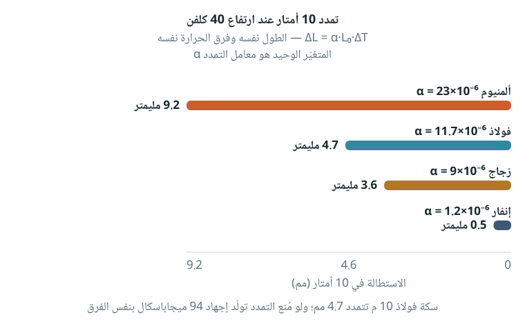

التمدد الحراري
التمدد الحراري زيادة أبعاد الجسم بارتفاع حرارته: ΔL = α·L₀·ΔT، حيث α معامل التمدد الطولي. في الفولاذ α ≈ 11.7×10⁻⁶ لكل كلفن، فسكة 10 أمتار تتمدد نحو 4.7 مم عند ارتفاع 40 كلفن — وإن مُنع التمدد تولّد إجهاد يقارب 94 ميجاباسكال.
سبب التمدد أن ارتفاع الحرارة يزيد المسافة المتوسطة بين الذرات في الشبكة البلورية، فيزداد الطول في الأبعاد الثلاثة. سكة فولاذ بطول 10 م وα = 11.7×10⁻⁶ تتغير بـ4.7 مم لكل 40 كلفن، وهذا هو سبب فواصل التمدد في الجسور والسكك. وإذا مُنع التمدد بين نقطتين ثابتتين فإن الحرارة لا تُبدّد الطاقة، بل تتحول إلى إجهاد انضغاطي σ = E·α·ΔT = 94 ميجاباسكال، وهو قريب من إجهاد الخضوع لأنابيب البوليمر ويتجاوزه في الفولاذ عند فروق حرارية أكبر (عند 100 كلفن يبلغ 234 ميجاباسكال). ولماء شذوذ معروف: يتمدد بالتبريد بين 4 °م و0 °م فتنكسر أنابيب الماء المغلقة في الشتاء لا لأن الماء تجمد وتمدّد فقط، بل لأن أقصى كثافة عنده 4 °م.
كيف تعمل الظاهرة؟
الطاقة الحرارية تزيد سعة اهتزاز الذرات حول موضع اتزانها، والكمون بين الذرات غير متماثل: مقاومة التقارب أكبر من مقاومة التباعد، فيزيح متوسط المسافة إلى الخارج. لذلك α أكبر في المواد ذات الكمون الأضعف (اللدائن، الألمنيوم) وأصغر في المواد الصلبة الشبكية (الإنفار، السيراميك). وفي المركّبات يُقاد التمدد بالمواد المكوّنة، فتظهر قيم سالبة في بعض الألياف الكربونية على اتجاه واحد، وهو أساس تصنيع هياكل بمعامل تمدد قريب من الصفر.
العلاقة بالأرقام
ΔL = α·L₀·ΔT = 11.7×10⁻⁶ × 10 × 40 = 4.7 مم للفولاذ، و23×10⁻⁶ يعطي 9.2 مم للألمنيوم، و1.2×10⁻⁶ يعطي 0.5 مم للإنفار. والإجهاد المقيّد σ = E·α·ΔT = 200×10⁹ × 11.7×10⁻⁶ × 40 = 94 ميجاباسكال. ولذلك تُصمَّم فواصل التمدد بطول يقابل أقصى فرق حراري موسمي لا متوسطه، ويُضاف هامش لأن الحرارة السطحية للأسطح الداكنة تزيد على حرارة الهواء بعدة درجات.
مفاهيم متقاربة
معامل التمدد الطولي α ليس معامل التمدد الحجمي β: للمواد المتماثلة β ≈ 3α، ويُستعمل β في السوائل والغازات حيث لا معنى للطول. والتمدد ليس لدونة: اللدونة تشوّه دائم لا يعود عند التبريد، والتمدد مرن يعود. والانكماش الحراري عند التبريد هو العملية نفسها بإشارة سالبة، لكنه خطر إن قيّد على مادة هشّة لأنه يولّد شدًّا لا انضغاطًا، والهشّ يتحمل الانضغاط أكثر من الشد.
حدود التطبيق
المعادلة الخطية تقريب صالح لمدى حراري محدود؛ عند تغيّر α مع الحرارة تُدمج α(T) على المدى، وفي المركّبات تُستعمل مصفوفة معاملات لكل اتجاه. ولا تصلح للغازات المحبوسة في حيّز مغلق: الضغط يرتفع بقانون الغاز لا بالتمدد الحر وحده. والترميز التصميمي لا يكفي وحده عند التلامس بين مادتين مختلفتي α: يلزم حساب الفرق النسبي، وهو ما يجعل زجاج النوافذ الملتصق بإطار معدني مشدودًا في الحرارة العالية.

| الكمية | القيمة | المصدر |
|---|---|---|
| معامل التمدد الطولي للفولاذ | 11.7×10⁻⁶ لكل كلفن | [1] |
| استطالة 10 م من الفولاذ عند 40 كلفن | 4.7 مليمتر | [1] |
| الإجهاد المولّد عند منع التمدد في الفولاذ (E = 200 جيجاباسكال) | 94 ميجاباسكال | [1] |
| معامل التمدد الطولي للإنفار | 1.2×10⁻⁶ لكل كلفن | [2] |
المصادر
- 1 Thermal expansion — Wikipedia. en.wikipedia.org/wiki/Thermal_expansion · اطُّلع عليه 2026-11-19
- 2 Coefficients of Linear Thermal Expansion — The Engineering ToolBox. www.engineeringtoolbox.com/linear-expansion-coefficients-d_95.html · اطُّلع عليه 2026-11-19
- 3 Thermal stress — Wikipedia. en.wikipedia.org/wiki/Thermal_stress · اطُّلع عليه 2026-11-19
استشهد بهذا المصطلح
الصيغتان مبنيتان من بيانات الصفحة نفسها: العنوان والتاريخ ورابط النسخة المنشورة.
التمدد الحراري. (2026). ديوان المعرفة — انفراد. https://infiradev.com/diwan/terms/linear-thermal-expansion.html
@misc{linear-thermal-expansion2026,
title = {التمدد الحراري},
howpublished = {{ديوان المعرفة — انفراد} — مرجع علمي عربي},
year = {2026},
url = {https://infiradev.com/diwan/terms/linear-thermal-expansion.html},
urldate = {2026-11-19},
note = {مراجعة علمية: عبدالله الهويدي — مراجعة في تطبيق انفراد}
}
راجعه: عبدالله الهويدي — مراجعة في تطبيق انفراد · 2026-11-19 · آخر تحديث 2026-11-19